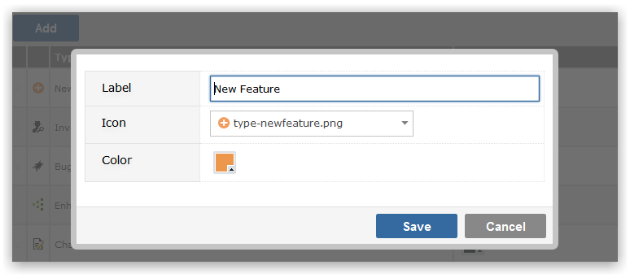

A Process is a 'type' of work item, so called because different types of work item involve different processes and may have different attributes. For example, in a Template related to Software Development, a 'Change Request' may require different fields, security and workflow from a 'Bug'. The Change Request might require an Approver, which Bug might not. Similarly, Bug might require that the Browser Version be captured, which is not relevant to Change Request
Make sure that you have selected the Project Template that you wish to maintain Process(es) for from the drop-down list.
To add a new Process click on the Add button. You will be prompted to provide

To maintain the label of a Process, you can click in the field and use inline editing to easily and instantly change the value. To delete a Process click on the Delete icon to the right of the screen. Orphaned tasks are not allowed, so if you delete a Process you must supply a different Process for all tasks that might belong to the deleted process to be moved to.
Once you have created the Process definition you need to decide which data fields you need for data capture around the process and who is allowed to see and interact with those fields. You will also need to setup Status values and define the Workflow steps and rules.